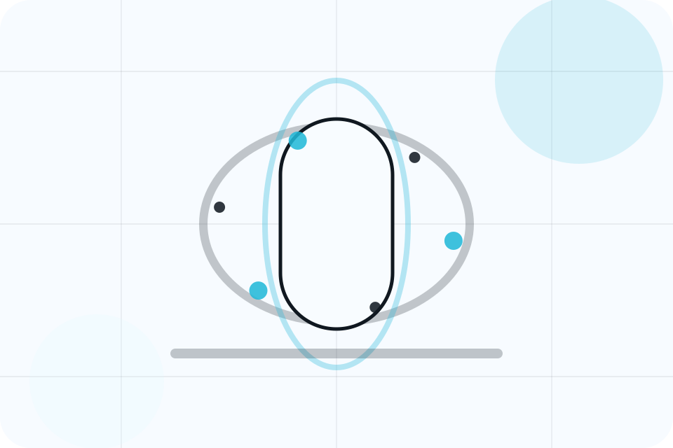
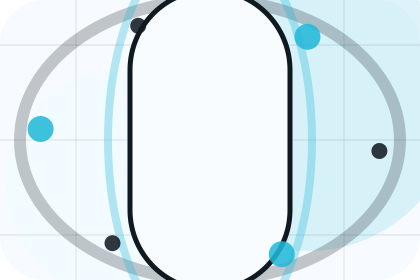
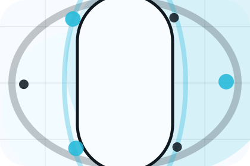
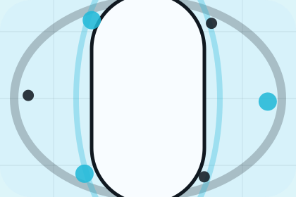

Context
Mission gives the page a specific angle instead of repeating the navigation label.
Clinic / 01
Clinic opens as a clear healthcare decision hub: what Aster offers, who it helps, why it matters, and which route to take first.
The first screen combines positioning, proof, primary action, and fast internal navigation, so people can act immediately or compare the rest of the clinic route with context.
Body scan split hero
Select the closest route and Aster keeps the next step, proof, and follow-up expectation aligned with fear reduction and care confidence.

Clinic / 02
Story adds care context to the clinic route, using the scan-first health check journey structure to support fear reduction and care confidence before visitors choose a next step.
Aster uses rounded diagnostic data cards and focused copy to make the decision easier to scan, aligning the section with fear reduction and care confidence rather than filling space.
Explore ClinicStory gives the page a specific angle instead of repeating the navigation label.
The rounded diagnostic data cards show what to compare, what to avoid, and what matters most for healthcare, medical services & patient care visitors.
The final cue points to a useful internal route so the section keeps the journey moving.
Clinic / 03
Mission adds care context to the clinic route, using the scan-first health check journey structure to support fear reduction and care confidence before visitors choose a next step.
Aster uses rounded diagnostic data cards and focused copy to make the decision easier to scan, aligning the section with fear reduction and care confidence rather than filling space.
Explore ClinicMission gives the page a specific angle instead of repeating the navigation label.
The rounded diagnostic data cards show what to compare, what to avoid, and what matters most for healthcare, medical services & patient care visitors.
The final cue points to a useful internal route so the section keeps the journey moving.
Clinic / 04
Team introduces the people, roles, or specialist credibility behind Aster so the decision feels less anonymous.
The copy ties names, roles, credentials, or availability back to the decision on the page instead of treating profiles as decorative biographies.
Explore Clinic
The person, team, or specialist function connected to team is easy to understand.
Clinic / 05
Standards gives the proof layer for clinic: standards, evidence, and reassurance that make the next decision feel grounded.
Instead of relying on vague claims, Aster presents visible standards, process cues, and proof artifacts that help healthcare visitors judge fit.
Explore ClinicVisible proof that helps visitors believe the claims behind standards.
The quality, safety, or operating expectation this section makes explicit.
What becomes clearer before someone decides whether to book an appointment.
Clinic / 06
Facilities adds care context to the clinic route, using the scan-first health check journey structure to support fear reduction and care confidence before visitors choose a next step.
Aster uses rounded diagnostic data cards and focused copy to make the decision easier to scan, aligning the section with fear reduction and care confidence rather than filling space.
Explore ClinicFacilities gives the page a specific angle instead of repeating the navigation label.
The rounded diagnostic data cards show what to compare, what to avoid, and what matters most for healthcare, medical services & patient care visitors.
The final cue points to a useful internal route so the section keeps the journey moving.
Clinic / 07
Credentials gives the proof layer for clinic: standards, evidence, and reassurance that make the next decision feel grounded.
Instead of relying on vague claims, Aster presents visible standards, process cues, and proof artifacts that help healthcare visitors judge fit.
Explore ClinicAster structures credentials around evidence, standard, and a clear next route so visitors can compare the block quickly before they book an appointment.
Book AppointmentClinic / 09
Ethics adds care context to the clinic route, using the scan-first health check journey structure to support fear reduction and care confidence before visitors choose a next step.
Aster uses rounded diagnostic data cards and focused copy to make the decision easier to scan, aligning the section with fear reduction and care confidence rather than filling space.
Explore ClinicEthics gives the page a specific angle instead of repeating the navigation label.
The rounded diagnostic data cards show what to compare, what to avoid, and what matters most for healthcare, medical services & patient care visitors.

The final cue points to a useful internal route so the section keeps the journey moving.
Clinic / 10
Aster closes the clinic route with a clear action, a quick reminder of the value, and a low-friction way to book an appointment.
Visitors who are ready can use the primary action. Visitors who are still comparing can scan the section links, proof, and support routes before they book an appointment.
Book AppointmentThe final block keeps the choice simple: act now, compare one more proof route, or send enough detail for a focused response.
Book Appointmentfear reduction and care confidence
A scan-first care journey with minimalist copy, body-data panels, instant-results proof, and a direct appointment CTA. Clinic ends with a direct path to book an appointment, plus enough context for visitors who still need to compare.

Book AppointmentInformation supports planning and is not a diagnosis or emergency instruction. People should use local emergency services for urgent symptoms.